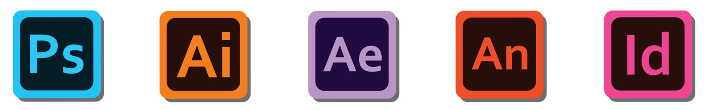
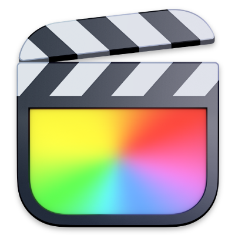

Versatile and results-driven Graphic Designer and PreMedia Specialist with 15+ years of expertise across print, digital, and motion design. Skilled in managing complex production workflows, ensuring prepress precision, and delivering creative solutions that align with brand objectives. Adept at optimizing processes, implementing SOPs, and leveraging technical and artistic expertise to enhance production quality and efficiency. Proactive problem-solver with strong collaboration and multitasking abilities, committed to driving seamless execution in dynamic environments.
Soft Skills
• Excellent communication and analytical skills, with a proactive and detail-oriented work style.
• Maintain the integrity of the creative concept throughout the production process.
• Navigate creative execution between departments, interpreting and clarifying instructions.
• Stand in to establish the quality and precision of the final output on a variety printing platforms.
• Create impactful presentations and mock-ups, contributing to client interactions and securing new business.
• Negotiate costs, manage vendor resources, and increase production efficiency.
• Fostering teamwork, sharing knowledge for efficient production processes and creative execution.
• Generate and inspect color proofs for approval.
Creative Strategy Art & Design (P/D) Layout Design Typography Photo Retouching Compositing Branding Color Theory Motion Graphics Web Development

Software

Final Cut Pro
